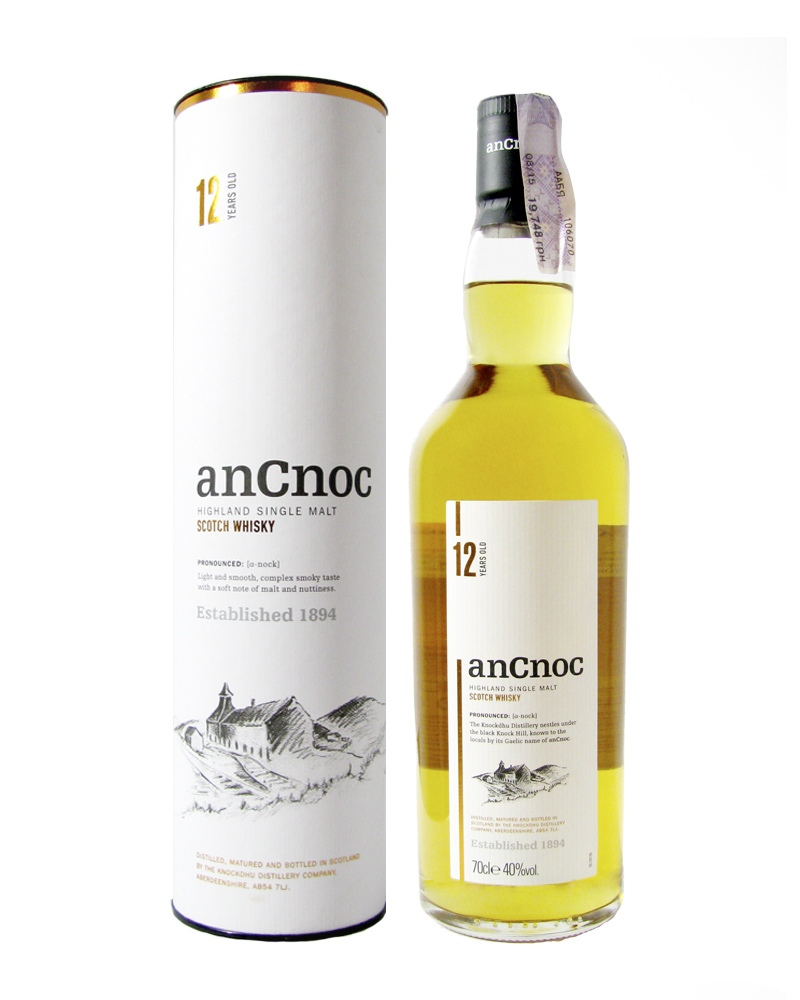

Page 6 of 7 -- articles
1 page of hw
2 page of hw
3 page of hw
Sign in
Sign up
Contact us
Articles
Выпускники американских университетов превосходят выпускников России, Китая и Индии
0serg
| 05.05.2019
Каждый месяц мы читаем новости о недостатках и провалах образования в США. Если верить прессе, то начальная школа в Америке не способна научить учеников даже базовым знаниям, знаний даваемых средней школой явно недостаточно для поступления в колледж, ну а школьники, сумевшие все же продержаться до окончания колледжа, оказываются абсолютно беспомощны за его стенами. Но недавно была опубликована весьма интересная статистика, показывающая что по крайней мере в одном конкретном аспекте подобное мнение весьма далеко от истины. Несмотря на известные проблемы американской системы среднего образования, выпускники американских колледжей специализирующихся на computer science оказались прекрасно развитыми и очень конкурентоспособными специалистами по сравнению со своими зарубежными конкурентами...
Читать далее..
Обзор виски AnCnoc 12 y.o. (40%)
Sainphony
| 05.05.2019

Аромат: густой, яркий; вначале фруктовые леденцы, кислые яблоки, терияки, дюшес; ощущается сернистость; чуть позже проявляются цитрусовые, легкая медовость ...
Читать далее..
Взломщик удалил код из сотен Git-репозиториев. За восстановление он требует 0,1 биткоина
marks
| 04.05.2019
На днях стало известно о том, что сотни разработчиков пострадали от действий неизвестного взломщика. Злоумышленник каким-то образом получил доступ к репозиториям пользователей хостинг-сервисов Git (GitHub, Bitbucker, GitLab), удалил хранящийся там код и теперь требует деньги за восстановление данных. Пока что способ, который применялся злоумышленником для взлома репозиториев остается неизвестным. Вместо удаленных данных злоумышленник оставляет сообщение с требованием выплаты выкупа в размере 0,1 биткоина ($570 по текущему курсу). В сообщении говорится о том, что код сохранен и находится на подконтрольном взломщику сервере. Данные пострадавших разработчиков будут окончательно удалены в том случае, если выкуп не будет получен в течение 10 дней.
Читать далее..